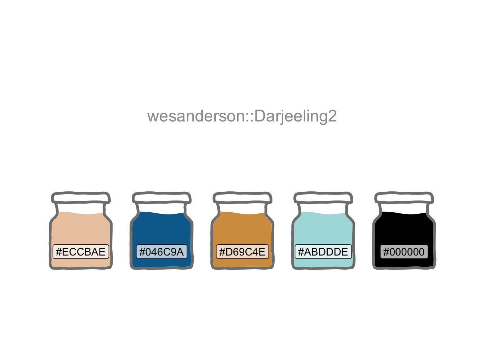

library(conflicted)
library(tidyverse)
conflict_prefer_all("dplyr")
library(rgeolocate)
library(R.utils)
library(leaflet)
library(rgdal)
library(wesanderson)
library(htmlwidgets)
library(usedthese)
conflict_scout()Surprising Stories
R
geospatial
A little interactive geospatial mapping and an unexpected find

Late in 2017 I experimented with geospatial mapping techniques in R. The log file for my blog seemed like a good source of data. I thought it might appeal to a wider audience of one (including me).
Combined with longitude and latitude data from MaxMind’s GeoLite2, this offered a basis for analysis. Although less precise than the GeoIP2 database, this would be more than adequate for my purpose of getting to country and city level. I settled on the leaflet (Cheng, Karambelkar, and Xie 2022) package for visualisation given the interactivity and pleasing choice of aesthetics.
The results however were a little puzzling.
theme_set(theme_bw())
(cols <- wes_palette("Darjeeling2"))
zip_file <- "world_shape_file.zip"
shape_file <- "TM_WORLD_BORDERS_SIMPL-0.3"
str_c("http://thematicmapping.org/downloads/", shape_file, ".zip") |>
download.file(zip_file)
unzip(zip_file)
world_spdf <- readOGR(getwd(), shape_file, verbose = FALSE)url <- "http://geolite.maxmind.com/download/geoip/database/GeoLite2-City.mmdb.gz"
file_name <- basename(url)
download.file(url, file_name)
gunzip(file_name, overwrite = TRUE)stats <- read_csv("stats.csv")ip_df <- map2(stats$IP, stats$Pages, \(x, y) {
maxmind(
x,
"GeoLite2-City.mmdb",
c(
"country_name",
"city_name",
"longitude",
"latitude",
"region_name"
)
) |>
mutate(IP = x) |>
rename(
country = country_name,
region = region_name,
city = city_name
) |>
mutate(
Pages = y,
Views = case_when(
Pages < 500 ~ 1,
Pages < 1000 ~ 2,
Pages < 2000 ~ 3,
.default = 4
)
)
}) |>
list_rbind()
ip_df <- ip_df |>
filter(!is.na(longitude) | !is.na(latitude)) |>
arrange(Pages)The concentration of page views in central London was of no immediate surprise as this was likely to be my site maintenance and blogging. What did strike me as odd though was the high concentration of page views in the centre of the US. More curious still, when I zoomed in on Kansas and found myself in the middle of the Cheney Reservoir.
pal <-
colorFactor(cols[c(2:5)],
domain = c(1, 2, 3, 4)
)
map1 <- leaflet(world_spdf) |> # World view
addProviderTiles(providers$CartoDB.Positron,
options = providerTileOptions(maxZoom = 21)
) |>
setView(-30, 35, zoom = 2) |> # World view
addPolygons(
fillColor = cols[1],
stroke = TRUE,
fillOpacity = 1,
color = cols[5],
weight = 0.3,
highlight = highlightOptions(
weight = 3,
color = cols[3],
fillOpacity = 0.3,
bringToFront = FALSE
),
label = world_spdf@data$NAME,
labelOptions = labelOptions(
style = list("font-weight" = "normal"),
textsize = "12px"
)
) |>
addCircleMarkers(
lng = ip_df$longitude,
lat = ip_df$latitude,
radius = ~ case_match(
ip_df$Views,
1 ~ 5,
2 ~ 10,
3 ~ 15,
.default = 20
),
fillColor = ~ pal(ip_df$Views),
color = cols[5],
weight = 1,
fillOpacity = 0.7,
popup = str_c(
"<b>",
ip_df$city,
"</b>",
"<br/>",
ip_df$region,
"<br/>",
as.character(ip_df$Pages),
" ",
"page views"
)
) |>
addLegend(
colors = cols[c(2:5)],
labels = c("<500", "500+", "1,000+", "2,000+"),
opacity = 1,
title = "Page Views<br/>Oct-23 to Dec-31 2017",
position = "bottomleft"
)I imagined someone drifting in the expanse of water with laptop, flask of coffee and box of sandwiches, whiling away the hours absorbed in my blog. Perhaps not. How could such a small number of blog pages generate in excess of 2,000 page views in one spot in less than two months?
Then I chanced upon a BBC news article from August 2016. When unable to locate IPs, MaxMind chose the geographical centre of the US as a default. This initially turned out to be a rented house in Kansas, which was rather unfortunate for the occupants, and brought upon them all kinds of unwanted attention.
MaxMind subsequently changed its default centre points to be the middle of bodies of water. And this solved another puzzle. Some of the page views in London appeared to be in the middle of the River Thames.
R Toolbox
Summarising below the packages and functions used in this post enables me to separately create a toolbox visualisation summarising the usage of packages and functions across all posts.
| Package | Function |
|---|---|
| R.utils | gunzip[1] |
| base | as.character[1], basename[1], c[5], getwd[1], is.na[2], library[9], list[1] |
| conflicted | conflict_prefer_all[1], conflict_scout[1] |
| dplyr | arrange[1], case_match[1], case_when[1], filter[1], if_else[2], mutate[3], rename[1] |
| ggplot2 | theme_bw[1], theme_set[1] |
| htmlwidgets | saveWidget[1] |
| leaflet | addCircleMarkers[1], addLegend[1], addPolygons[1], addProviderTiles[1], colorFactor[1], highlightOptions[1], labelOptions[1], leaflet[1], providerTileOptions[1], setView[1] |
| purrr | list_rbind[1], map2[1] |
| readr | read_csv[1] |
| rgdal | readOGR[1] |
| rgeolocate | maxmind[1] |
| stringr | str_c[2] |
| usedthese | used_here[1] |
| utils | download.file[2], unzip[1] |
| wesanderson | wes_palette[1] |
References
Cheng, Joe, Bhaskar Karambelkar, and Yihui Xie. 2022. “Leaflet: Create Interactive Web Maps with the JavaScript ’Leaflet’ Library.” https://CRAN.R-project.org/package=leaflet.